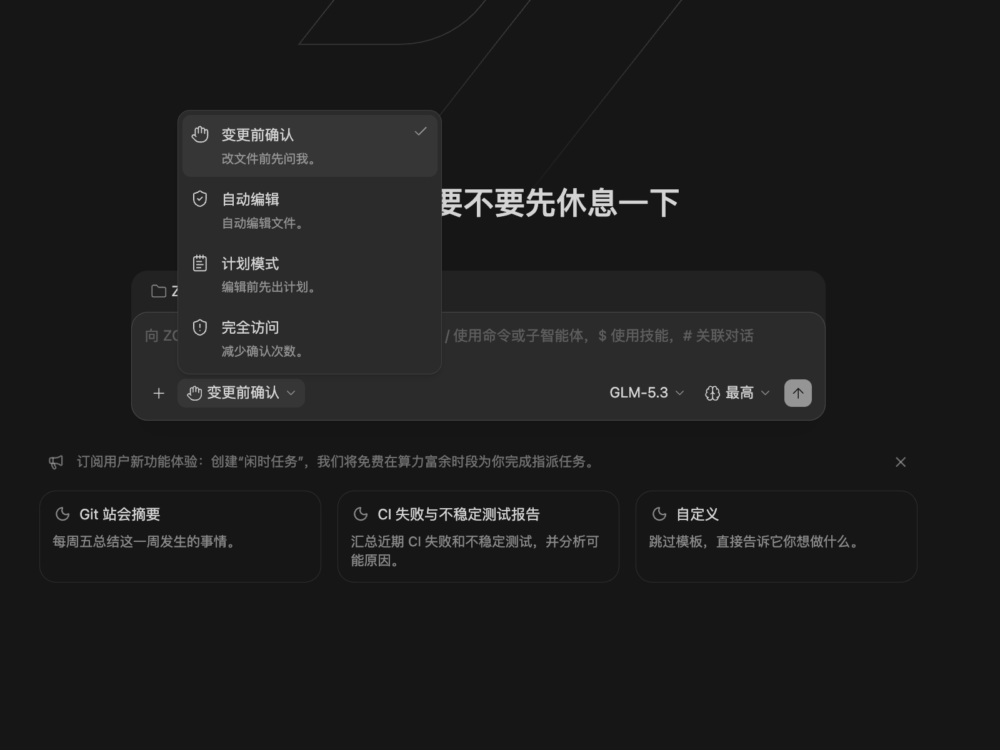

深度集成
安全操作确认
Drora 会把 Drora Agent 的权限控制放在任务界面里。执行模式选择器位于输入框附近，用户可以根据任务风险决定 Agent 的执行方式。
这套机制的核心是：在允许执行前，先看清 Agent 准备做什么。对于命令、文件改动、网络访问、脚本执行等操作，Drora 会在任务里展示对应内容；如果进入高权限或全自动模式，工具栏会持续显示风险提示。
Drora Agent 权限模式
Drora Agent 是 Drora 的主 Agent。它与 GLM 系列模型适配更紧，长任务和多步骤开发任务更适合从这里开始。
执行模式共四档，聊天输入框聚焦时按
Ctrl+Shift+M
可以快速循环切换，也可以在输入框工具条的模式菜单里直接选择：
| 模式 | 说明 | 适合场景 |
|---|---|---|
| 变更前确认 | 每次修改文件或执行命令前都先确认，也是默认档位。 | 关键代码、生产配置等高风险改动。 |
| 自动编辑 | 文件编辑自动执行，命令等操作仍需确认。 | 常规迭代开发。 |
| 计划模式 | 先制定计划，确认后再开始实施。 | 重构、迁移、长任务。 |
| 完全访问 | 尽量自动执行，减少确认。 | 已确认上下文可信、希望连续执行的任务。 |
工作流程
- 触发确认：Agent 发起需要授权的操作时，当前任务会暂停，输入区也会进入阻塞状态，避免继续追加新的执行要求。
- 弹出请求：界面会展示 Agent 计划执行的具体命令、文件改动或工具调用内容。
- 用户决策：确认后 Agent 才会继续执行；拒绝后会中止本次操作或回到可调整状态。可用 Tab / 上下键选择、回车确认。
- 任务同步：权限请求属于当前任务。切换任务后再回来，确认状态仍会保留；侧边栏也会显示等待确认状态。
决策选项
| 选项 | 说明 | 建议场景 |
|---|---|---|
| 允许 | 仅授权 Agent 执行当前这一次操作。 | 临时或不确定的单次任务。 |
| 始终允许 | 授权当前及后续同类型操作，无需再次询问。 | 操作安全可信且需要高频执行，例如常规编译。 |
| 拒绝 | 禁止 Agent 执行当前操作。 | 发现指令、路径或风险不符合预期。 |
| 始终拒绝 | 禁止当前及后续同类型操作。 | 明确不希望 Agent 执行的某类操作。 |
部分场景下还会出现「允许本会话」、「始终允许本项目」、「始终允许此命令」（项目范围内相同命令不再询问）等更细粒度的选项，按需选择即可。
提问超时自动继续
除了权限确认，Agent 有时会主动问你一个选择题（比如「用方案 A 还是方案 B」）。这类提问默认带 5 分钟倒计时，快到时间时面板上会显示剩余时长。到点还没人回答，Agent 会按自己的判断挑一个方向继续推进，这一步在历史记录里标记为「未回答，已自动继续」。
只要你有任何动作——鼠标移到问答面板上、开始选择、点击秒数、或在侧栏点「停止计时」——倒计时就会 永久停止 ，安心思考即可。
不希望它自动继续，可以在「设置 → 常规 → 提问自动继续」关掉，之后所有提问都会一直等你回答。注意这个开关不可追溯：关闭期间产生的提问，即使之后重新打开也不会恢复计时。
倒计时只作用于这类普通提问， 权限请求和计划审批本来就会一直等待 ，不受影响。
常见场景
- 运行第三方脚本：Agent 尝试运行项目中的 Python、Shell 或 Node.js 脚本。
-
网络请求：Agent 需要通过
curl或其它方式访问外部 API。 - 文件改动：Agent 创建、编辑、删除或重命名文件。Drora 会在任务结果中展示文件改动摘要，并提供打开和撤销入口。
- 系统级命令：执行可能修改系统配置、安装依赖或删除文件的命令。
任务快照、Git 检查点和会话恢复不能替代对全部本地文件、数据库及外部服务的备份；停止会话或取消请求，也不能撤销已经完成的文件写入和外部操作。
使用建议
- 在允许执行前，仔细阅读即将执行的命令、路径和文件名。
- 不确定时优先用「允许」，不要直接用「始终允许」。
- 「始终允许」和完全访问模式都会减少后续确认，请只在确认安全可信时使用。
- 大改动优先使用「计划模式」，先确认方案，再开始实施。
下一步
